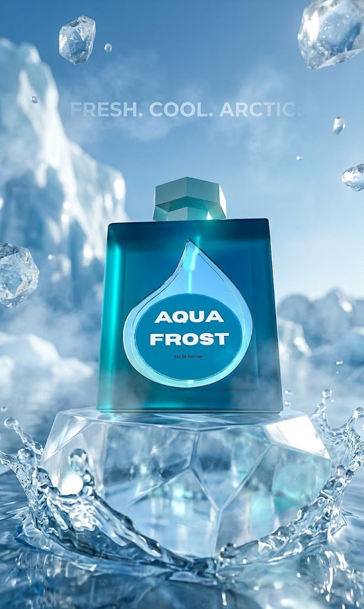
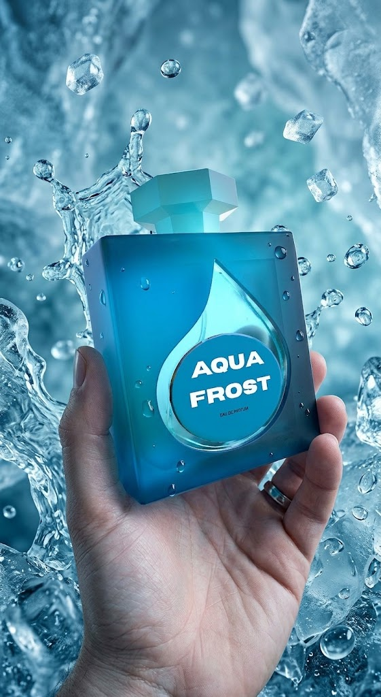
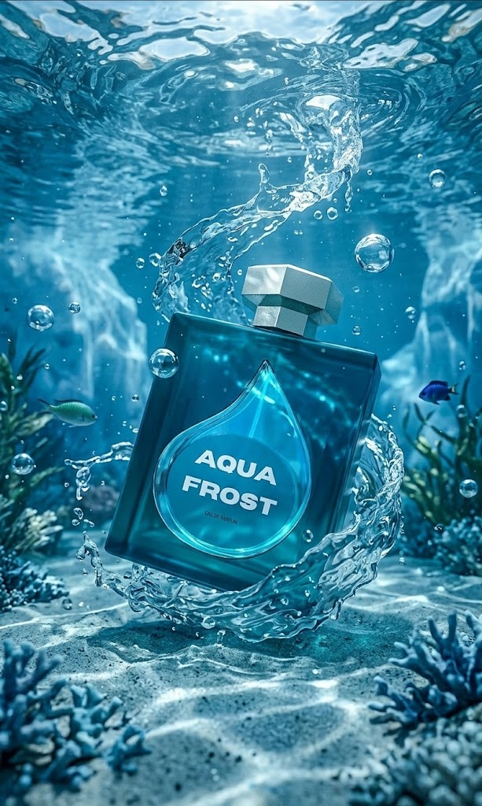

3D Product Design & Aquatic Commercial Rendering
Aqua Frost is engineered around an arctic cooling aesthetic, showcasing a geometric blue glass bottle and dynamic fluid dynamics.
Tools Used: Nomad Sculpt, Commercial Asset Design & Web Showcase


